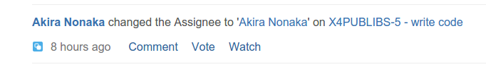
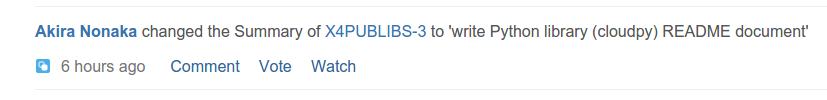

We have a distributed team and everyone remotely works from wherever they are (6 cities across 3 countries). Remote work is nothing new (we've practiced it since 2007), at least for us and generally: But it requires a different approach and similar to re-thinking about work as we know it.
When we communicate with another human being face-to-face, the human brain is a wonderful thing, and it can fully utilize it's senses to process all the information it gets and slice it down to the gist of what is being communicated. Most of the time, done right, you get understood clearly, action gets taken quickly and stuff gets moving.
A challenge with remote work is that those senses gets removed and only goes down to one or two (usually only one). What the brain needs to fill in between will be filled based on incomplete data, biased data and assumptions. These incomplete or incorrect data needs to be fixed at some point or another, and if action was taken based on these data, those action too needs to be fixed. Fixing takes time and money, so this is what we call communication costs. Communication costs when they add up will be significant, not only in terms of dollars and cents, but also the toll it takes on emotional stress.
In our setup, there are a few simple steps and insights that we take to reduce communication costs.
Think of your ticket summaries like the <TITLE> to be indexed.
Like any other modern setup, we use ticketing systems to manage and keep track of our tasks and work. Special attention needs to be taken on how you write the summary or the title of the tickets so that it include all the necessary keywords that includes what the ticket is all about, as nearly all the time that is all that is shown to you in lists
A bad example that just says "write code". Duuh.

On the other hand, you don't need to overdo the summary. Something like this will suffice

A concise and precise summary statements will remove the need for anyone who is going through your tasks to click on each link to read it's details, in order to decide if it's something they need to look into. A single cycle of clicking and reading and moving back will maybe take one minute, and if you'd spent 5 seconds to add a little more precise information in your summary, that will save tremendous amount of time and stress (as moving from one screen to another for different tickets switches your mind into different contexts and is stressful) for whoever will be going through your tickets. You'll definitely be popular too, as no one hates precise and concise information.
Make acknowledgments
We use Slack for internal communication, and Slack is great, but sometimes you don't know if your request or question is getting the appropriate attention. This is bad because it's ambiguous. When it's ambiguous, communication costs kicks in because you'll need to spend time following it up and read the other person's mind
The great thing about Slack is that it allows you to add reactions to a post.

This gives you the ability to acknowledge something, without having to write things out. A second of clicking on a button will remove that ambiguity as we can see who clicked.
Responses go on the same channel
This is a simple tip, but it can get out of hand if you don't watch out. Keeping responses to the questions or requests on the same channel (i.e questions by email is replied by email) keeps everything of the same context in the same medium, which helps a lot when you search for it later.
Good teamwork pays for your costs
A very effective way to pay for your communication costs is to have good teamwork. Good teamwork can mean many things, but if I need to distill it to one thing, it will be for someone in your team to do the expected thing in a timely manner, without specific instructions from anyone.
This means people are autonomously working together towards a common goal without needing much interaction (thus you have little communications which can incur costs). This is always desirable.
The question next then will be: How do you create a team with great teamwork? This is beyond the scope of this post, but I believe the basics are respect (i.e I respect this person because she is good at what she does) and trust (I trust this person to do the correct thing at the correct time because she is good).
We do acknowledge that face to face interaction is still and will always be very important for us to develop trust and respect among ourselves. We are after all social animals with complex understanding of one another. This is the one big disadvantage of remote working, so we try lessen the impact of this by having periodical Team Camps, where we actually get together and spend time doing something together.

Don't assume or guess. Give it a call
The final tip is sort of an anti-pattern, and I practice it as a last resort. If things start to go out of hand via text (email or chat), I'll make a call, go voice and clear things out. Going voice has the advantage of upping the communication tempo, giving it an urgent tone and you can use nuances and make multiple suggestions faster than you can type them. But voice is very disruptive as everything else need to stop to handle it, so we use this sparingly and mostly on pre-determined schedules.
I have simple rule to decide if I need to make a call: If I still haven't understood what the issue is, the current action taken and the intended outcome after reading a particular thread or ticket twice, and a question concerning via chat still does not answer my question, then it is time to make a call.
In summary
These are some of the tips and strategies that we take to reduce communication costs within our diverse and remote team. All teams are obviously different, and some might work or may not work for yours.
As for us, we'll keep on looking and trying too.